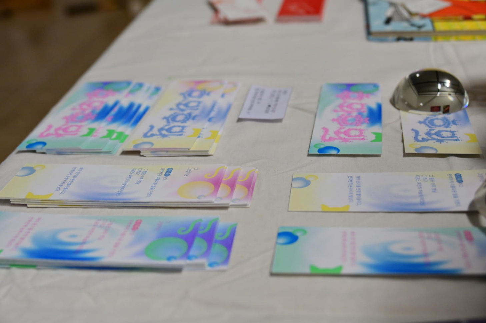
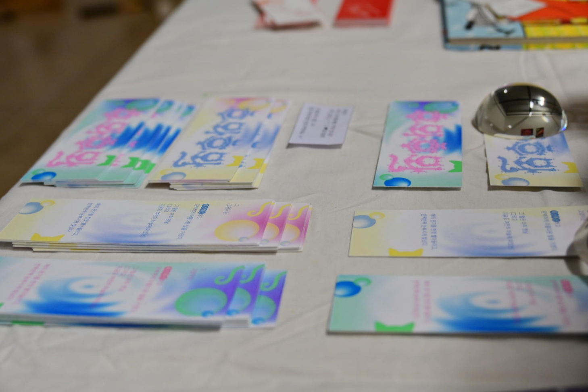

2023
[후와후와 레터링을 위한 책갈피]
49.5 * 140
후와후와 레터링을 위한 책갈피를 디자인했습니다.
어릴 적 고양이 친구와의 추억을 담은 따뜻한 분위기를 담아낸
레터링에 어울리도록 따뜻하고 몽글몽글한 색감으로 작업했습니다.
고양이 그래픽과 원형 그래픽을 사용하여 분위기를 강조하였고
어릴 적 점선 따라 그리기의 컨셉을 적용하여 레터링을 따라 그려볼 수 있도록 했습니다.
전시장에는 펜과 책갈피들을 배치하여
관람객들이 자유롭게 가져갈 수 있도록 하였습니다.

 

click and see my work(˘ᗜ˘)
my cat graphicsლ(=ↀωↀ=)ლ
exibition pic/ᐠ ◝ ˕ ◜マ Ⳋ